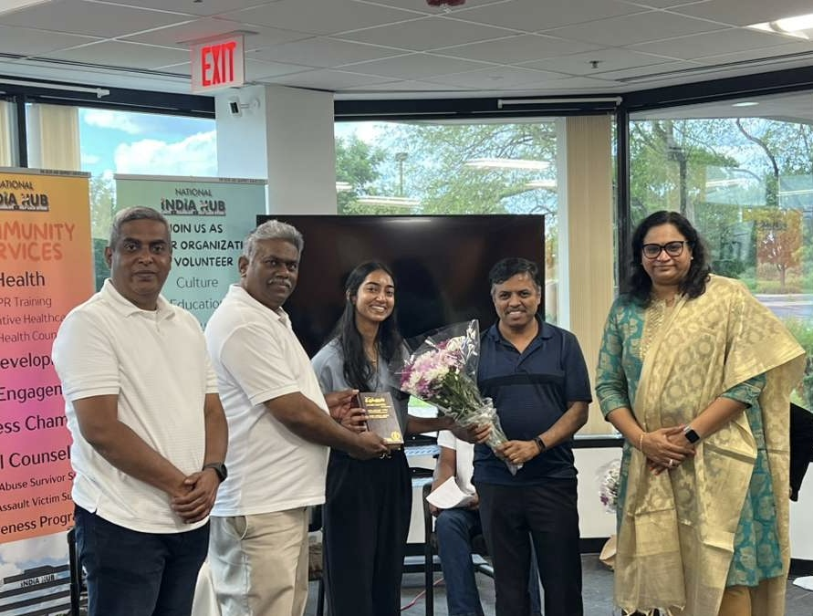

Investing in Our Youth
Our youth are the future of this organization, and they deserve a CTS that grows alongside them. From my years teaching at the Champaign Tamil School to my ongoing work with the Gurnee Tamil School, I have seen firsthand how much our children gain when we invest in them beyond the classroom.
As Vice President, I want to expand our programming with workshops, mentoring opportunities, and events that help young people explore their interests and advance their academic and career goals. This includes launching career panels where our youth can learn directly from professionals in our community, as well as college application workshops to help students and their families navigate one of the most stressful milestones of growing up.
Our community has an incredible wealth of talent and experience to offer the next generation. I want CTS to be the bridge that connects them.
